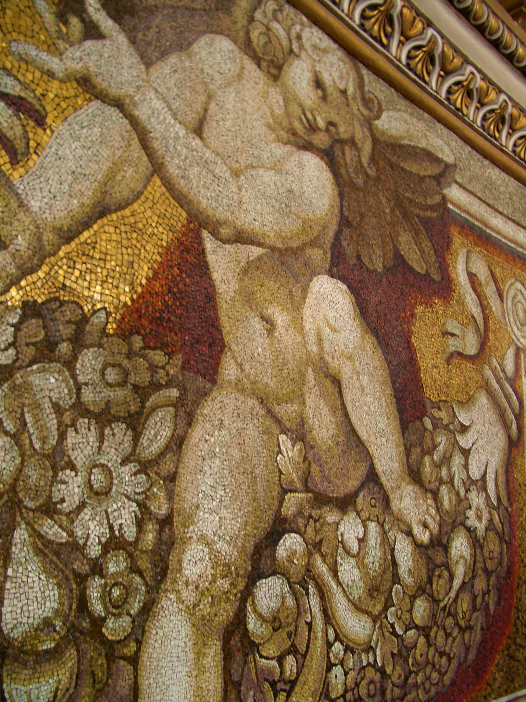

136 米高的穹顶观景台是罗马老城的制高点：360° 俯瞰圣彼得广场的椭圆柱廊、台伯河与全城红屋顶。登顶路线会先带你贴着穹顶内壁看马赛克巨字，再钻进双壳之间的斜面夹层--最后一段是罗马最著名的“贴墙旋转楼梯”。
看点路线
Il Percorso
- 1第一平台：贴脸看穹顶内壁--原来“壁画”全是马赛克
- 2外平台：360° 罗马全景 + 俯瞰圣彼得广场椭圆柱廊
- 3下行时看穹顶排水沟与石匠刻痕：16 世纪的施工痕迹仍在
登顶看点
La Cupola · 3 段垂直体验

马赛克内壁
穹顶内壁的巨型人物与拉定铭文，远看像油画，近看全是马赛克--单块瓷片比指甲盖还小。16 世纪的教皇们选马赛克是为了对抗潮湿与时间：五百年过去，颜色零衰减，颜料看到会自卑。
双壳夹层
内壳与外壳之间的斜向通道，墙体倾斜，人跟着斜走--这段 300 级的“歪楼梯”是文艺复兴工程学的沉浸式体验课：你不是在“看”穹顶结构，你正走在它体内。
灯笼层观景台
穹顶最高点下方的环形平台。往东看罗马老城无边红顶与维托里亚诺纪念堂，往西看梵蒂冈花园，正下方是贝尼尼的柱廊“母亲的臂弯”--设计师的透视把戏在穹顶上看才真正显形。
历史故事
Le Storie
壹为什么罗马的建筑都比它矮
罗马有一条不成文的城市天际线共识：老城新建建筑原则上不越过圣彼得穹顶（136 米）。20 世纪的皮雷利大厦与近年的垂直森林都在“擦线飞行”，后者还在顶楼安了一座小圣母雕像致敬。
这条“隐形限高”让罗马老城至今保存着“穹顶即天际线”的中世纪轮廓。登顶时看一眼东南方向--维托里亚诺纪念堂是 20 世纪唯一敢抢戏的例外，罗马人骂了它一百年。
136 米的高度，刚好够看完两千年。
贰双壳之间的斜路
登顶路线穿过穹顶的双壳夹层：米开朗基罗的结构遗产。内壳承重、外壳抗风，中间的空腔正好容下一条维修通道--今天的游客用它登顶。
通道的墙体是倾斜的，人也跟着斜走：你不是在“看”穹顶结构，你正走在它体内。
最后一段楼梯的倾斜度接近 40 度，拉着扶手绳索上行--几百年来的守塔人、钟匠与游客，都在这堵斜墙上留下了鞋印。
叁写字的马赛克
第一平台贴脸看穹顶内壁：巨型人物与拉定铭文全部是马赛克，单块瓷片比指甲盖还小。
那行字来自《马太福音》：“你是彼得，我要把我的教会建造在这磐石上。”--大教堂的合法性宣言，写在离地 100 米的高空。
马赛克的优势是永不褪色：五百年过去，颜色零衰减。教皇们选它，是为了让这句话比油画活得更久。
肆灯笼里的钥匙孔
穹顶最高处的“灯笼”（lantern）是整座建筑的气压与重力平衡点--里面有一道窄梯通往最顶的小平台，今天不对游客开放。
从灯笼底座仰望，你会看到光从唯一的窗口直落进穹顶心脏：整座大殿的采光哲学，是“从上而下的光”。
1593 年灯笼落成那天，罗马放了一天假。为屋顶上的一个“小亭子”放假--这就是那座城市的优先级。
伍圣彼得广场的“设计稿视角”
从穹顶平台俯瞰，贝尼尼柱廊的椭圆才真正显形：四列柱廊如双臂环抱，方尖碑与两座喷泉标出椭圆的焦点。
找广场地面上那两块白色圆盘：站在圆盘上，柱廊的纵深会“坍缩”成一排柱子--设计师埋在石头里的视错觉，从穹顶上看是两枚白色句号。
你是从“设计稿的视角”看这张透视考卷的：贝尼尼当年画图的桌上，就摆着这个高度。
陆守塔人、钟与瑞士卫队
穹顶外平台曾有专职守塔人：报火警、看敌情、敲钟。今天钟仍在--东侧的钟组里有一尊“良九世钟”（1180? 年代铸造的老钟，仅大节启用）。
平台下方是瑞士卫队的哨位与营房。1506 年以来，这群米开朗基罗时代制服的士兵守着这个国家的全部边境--一圈 3.2 公里的城墙。
登顶时对他们点头致意：你正穿过世界上最小的国家，也是世界上最古老的常备军之一。
柒雾中的穹顶
罗马一年里有十几个清晨被雾覆盖：从穹顶平台看下去，整座老城沉在云海里，只剩圣彼得双塔与远处的山丘浮出--“云上罗马”是本地摄影师蹲守一年的画面。
另一种奇观是雨后：低云从穹顶下方穿过，你站在云的上面看闪电落在台伯河。
登顶最大的变量不是体力，是天气。晴天看全景，雾天看仙境--这座城市的天气从不提供坏选项。
捌551 级的“朝圣经济学”
楼梯票 €6、电梯票 €10--两种价格，同一条最后 320 级的窄楼梯。这个定价设计的潜台词：电梯只卖“少爬 231 级”，不卖“免爬”。
19 世纪前登顶需要申请与向导；今天每年约百万人完成这 551 级--大理石踏步中央被磨出浅槽。
数楼梯的人各有各的算法。最实用的一个：把它想成西斯廷的“售后服务”--看过天顶画，再站到天顶画的头顶上。
玖穹顶的“斜率警告”
官方在售票处与平台都立了提示：恐高、幽闭、心脏不适者慎登。这不是免责套话--最后一段通道宽约 70 厘米，双向错身时人与人都需要侧让。
心理技巧：盯着脚下台阶不看两侧，休息点都设在有窗口的位置。下山永远比上山吓人，扶稳绳索。
两千年前的砖、五百年前的梯、此刻的你--这条通道的三个时代，靠一根麻绳连着。
拾从罗马唯一的高处看罗马
罗马老城内几乎没有高过圣彼得穹顶的观景台--贾尼科洛山与橙园都在“平视”它。唯一能俯视全城的制高点，就是穹顶本身。
往北看梵蒂冈车站与花园，往东看纳沃纳的广场群与万神殿的圆洞，往南看台伯河弯与特拉斯提弗列的红顶，往西看里亚桥与远山。
天气好时，向东 30 公里外的蒂沃利山线清晰可见。一张门票，把整座城市收纳进一个 360 度的取景框--这是米开朗基罗给后世留的观景台。
参观贴士
Consigli Pratici
- 最后一段楼梯极窄且倾斜，恐高/幽闭/心脏不适者慎登，电梯也只省前 231 级
- 平台上风大，10 月清晨登顶带外套
- 旺季 10:00 前或 16:00 后光线最佳；正午顶光拍广场反而清晰
- 登顶票不含在大教堂免费票内，现场现金/卡均可
- 大包不能登顶，先寄存
顺路同游
Da Non Perdere